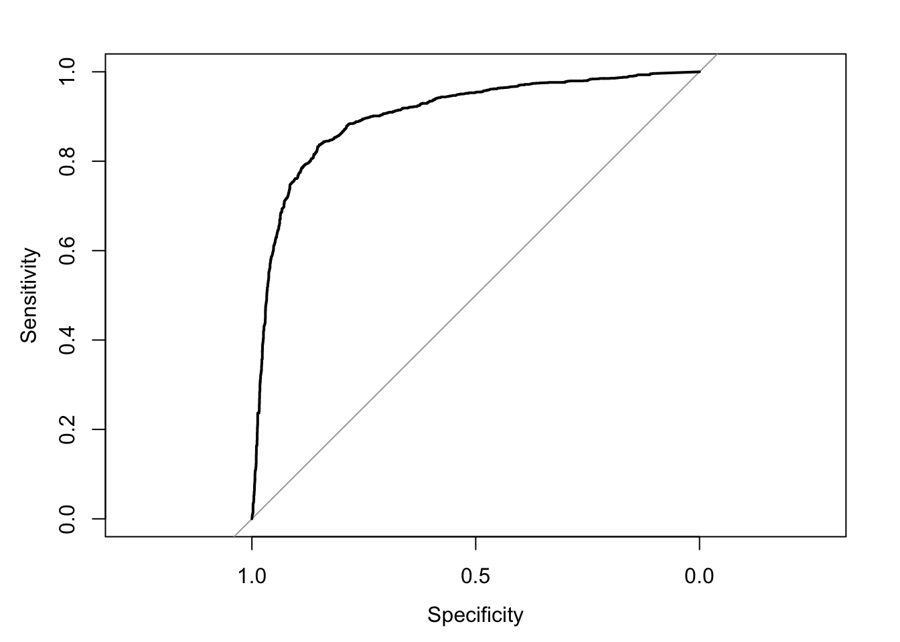
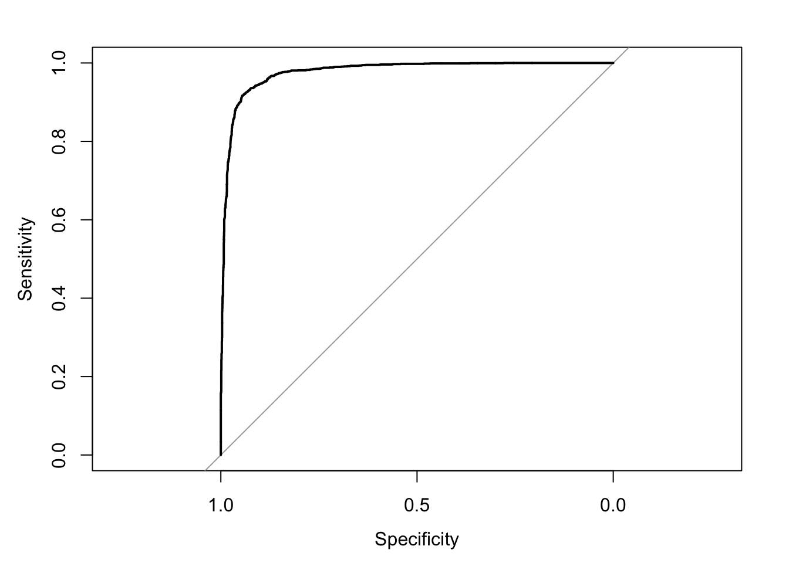
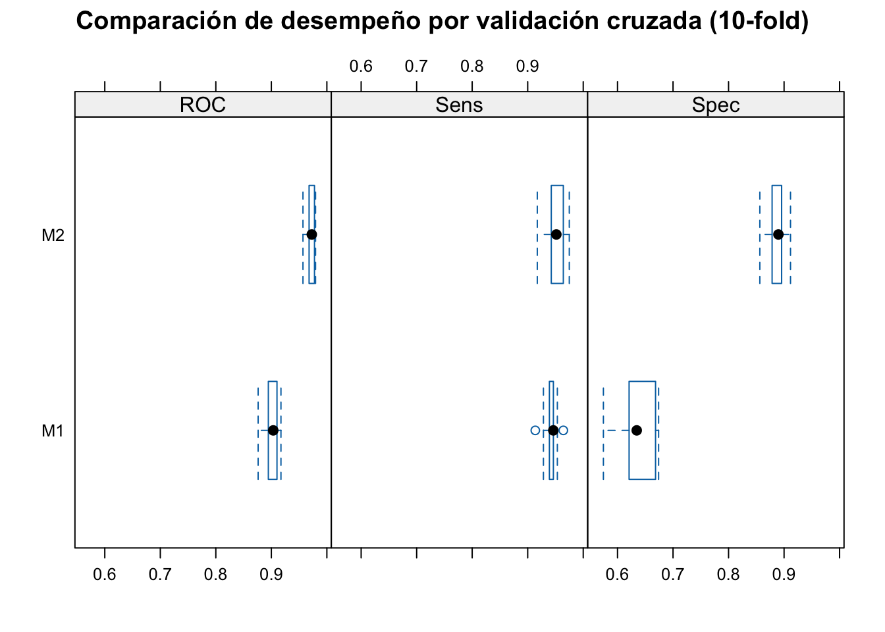
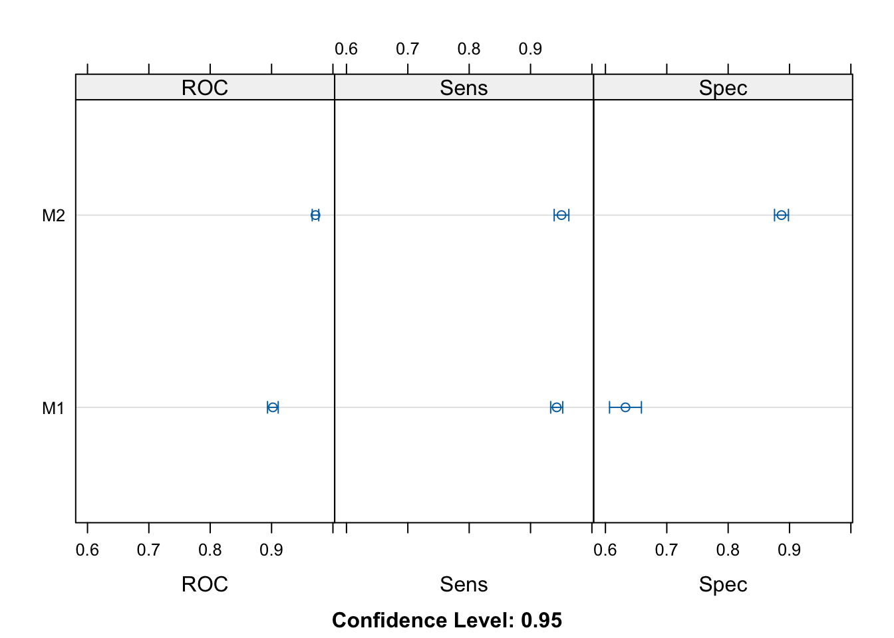

SOC3070 Análisis de Datos Categóricos
Ponderación: 6% de la nota final del curso.

Datos:
En esta tarea trabajaremos con el dataset Spambase disponible en el repositorio UCI: https://archive.ics.uci.edu/dataset/94/spambase
Este dataset contiene 4.601 correos electrónicos, de los cuales aproximadamente el 40% son spam. Cada observación corresponde a un email y las variables predictoras son 57 características precomputadas que incluyen:
- Frecuencia relativa de palabras como “free”, “money”, etc.
- Frecuencia de caracteres como
;,(,[.
- Longitud de secuencias de mayúsculas.
El objetivo es clasificar correos como spam (1) o no-spam (0).
#> Rows: 4,601
#> Columns: 58
#> $ word_freq_make <dbl> 0.00, 0.21, 0.06, 0.00, 0.00, 0.00, 0.00, 0…
#> $ word_freq_address <dbl> 0.64, 0.28, 0.00, 0.00, 0.00, 0.00, 0.00, 0…
#> $ word_freq_all <dbl> 0.64, 0.50, 0.71, 0.00, 0.00, 0.00, 0.00, 0…
#> $ word_freq_3d <dbl> 0, 0, 0, 0, 0, 0, 0, 0, 0, 0, 0, 0, 0, 0, 0…
#> $ word_freq_our <dbl> 0.32, 0.14, 1.23, 0.63, 0.63, 1.85, 1.92, 1…
#> $ word_freq_over <dbl> 0.00, 0.28, 0.19, 0.00, 0.00, 0.00, 0.00, 0…
#> $ word_freq_remove <dbl> 0.00, 0.21, 0.19, 0.31, 0.31, 0.00, 0.00, 0…
#> $ word_freq_internet <dbl> 0.00, 0.07, 0.12, 0.63, 0.63, 1.85, 0.00, 1…
#> $ word_freq_order <dbl> 0.00, 0.00, 0.64, 0.31, 0.31, 0.00, 0.00, 0…
#> $ word_freq_mail <dbl> 0.00, 0.94, 0.25, 0.63, 0.63, 0.00, 0.64, 0…
#> $ word_freq_receive <dbl> 0.00, 0.21, 0.38, 0.31, 0.31, 0.00, 0.96, 0…
#> $ word_freq_will <dbl> 0.64, 0.79, 0.45, 0.31, 0.31, 0.00, 1.28, 0…
#> $ word_freq_people <dbl> 0.00, 0.65, 0.12, 0.31, 0.31, 0.00, 0.00, 0…
#> $ word_freq_report <dbl> 0.00, 0.21, 0.00, 0.00, 0.00, 0.00, 0.00, 0…
#> $ word_freq_addresses <dbl> 0.00, 0.14, 1.75, 0.00, 0.00, 0.00, 0.00, 0…
#> $ word_freq_free <dbl> 0.32, 0.14, 0.06, 0.31, 0.31, 0.00, 0.96, 0…
#> $ word_freq_business <dbl> 0.00, 0.07, 0.06, 0.00, 0.00, 0.00, 0.00, 0…
#> $ word_freq_email <dbl> 1.29, 0.28, 1.03, 0.00, 0.00, 0.00, 0.32, 0…
#> $ word_freq_you <dbl> 1.93, 3.47, 1.36, 3.18, 3.18, 0.00, 3.85, 0…
#> $ word_freq_credit <dbl> 0.00, 0.00, 0.32, 0.00, 0.00, 0.00, 0.00, 0…
#> $ word_freq_your <dbl> 0.96, 1.59, 0.51, 0.31, 0.31, 0.00, 0.64, 0…
#> $ word_freq_font <dbl> 0, 0, 0, 0, 0, 0, 0, 0, 0, 0, 0, 0, 0, 0, 0…
#> $ word_freq_000 <dbl> 0.00, 0.43, 1.16, 0.00, 0.00, 0.00, 0.00, 0…
#> $ word_freq_money <dbl> 0.00, 0.43, 0.06, 0.00, 0.00, 0.00, 0.00, 0…
#> $ word_freq_hp <dbl> 0, 0, 0, 0, 0, 0, 0, 0, 0, 0, 0, 0, 0, 0, 0…
#> $ word_freq_hpl <dbl> 0, 0, 0, 0, 0, 0, 0, 0, 0, 0, 0, 0, 0, 0, 0…
#> $ word_freq_george <dbl> 0, 0, 0, 0, 0, 0, 0, 0, 0, 0, 0, 0, 0, 0, 0…
#> $ word_freq_650 <dbl> 0.00, 0.00, 0.00, 0.00, 0.00, 0.00, 0.00, 0…
#> $ word_freq_lab <dbl> 0, 0, 0, 0, 0, 0, 0, 0, 0, 0, 0, 0, 0, 0, 0…
#> $ word_freq_labs <dbl> 0, 0, 0, 0, 0, 0, 0, 0, 0, 0, 0, 0, 0, 0, 0…
#> $ word_freq_telnet <dbl> 0, 0, 0, 0, 0, 0, 0, 0, 0, 0, 0, 0, 0, 0, 0…
#> $ word_freq_857 <dbl> 0, 0, 0, 0, 0, 0, 0, 0, 0, 0, 0, 0, 0, 0, 0…
#> $ word_freq_data <dbl> 0.00, 0.00, 0.00, 0.00, 0.00, 0.00, 0.00, 0…
#> $ word_freq_415 <dbl> 0, 0, 0, 0, 0, 0, 0, 0, 0, 0, 0, 0, 0, 0, 0…
#> $ word_freq_85 <dbl> 0, 0, 0, 0, 0, 0, 0, 0, 0, 0, 0, 0, 0, 0, 0…
#> $ word_freq_technology <dbl> 0.00, 0.00, 0.00, 0.00, 0.00, 0.00, 0.00, 0…
#> $ word_freq_1999 <dbl> 0.00, 0.07, 0.00, 0.00, 0.00, 0.00, 0.00, 0…
#> $ word_freq_parts <dbl> 0, 0, 0, 0, 0, 0, 0, 0, 0, 0, 0, 0, 0, 0, 0…
#> $ word_freq_pm <dbl> 0, 0, 0, 0, 0, 0, 0, 0, 0, 0, 0, 0, 0, 0, 0…
#> $ word_freq_direct <dbl> 0.00, 0.00, 0.06, 0.00, 0.00, 0.00, 0.00, 0…
#> $ word_freq_cs <dbl> 0, 0, 0, 0, 0, 0, 0, 0, 0, 0, 0, 0, 0, 0, 0…
#> $ word_freq_meeting <dbl> 0, 0, 0, 0, 0, 0, 0, 0, 0, 0, 0, 0, 0, 0, 0…
#> $ word_freq_original <dbl> 0.00, 0.00, 0.12, 0.00, 0.00, 0.00, 0.00, 0…
#> $ word_freq_project <dbl> 0.00, 0.00, 0.00, 0.00, 0.00, 0.00, 0.00, 0…
#> $ word_freq_re <dbl> 0.00, 0.00, 0.06, 0.00, 0.00, 0.00, 0.00, 0…
#> $ word_freq_edu <dbl> 0.00, 0.00, 0.06, 0.00, 0.00, 0.00, 0.00, 0…
#> $ word_freq_table <dbl> 0, 0, 0, 0, 0, 0, 0, 0, 0, 0, 0, 0, 0, 0, 0…
#> $ word_freq_conference <dbl> 0, 0, 0, 0, 0, 0, 0, 0, 0, 0, 0, 0, 0, 0, 0…
#> $ char_freq_semicolon <dbl> 0.000, 0.000, 0.010, 0.000, 0.000, 0.000, 0…
#> $ char_freq_paren <dbl> 0.000, 0.132, 0.143, 0.137, 0.135, 0.223, 0…
#> $ char_freq_bracket <dbl> 0.000, 0.000, 0.000, 0.000, 0.000, 0.000, 0…
#> $ char_freq_exc <dbl> 0.778, 0.372, 0.276, 0.137, 0.135, 0.000, 0…
#> $ char_freq_dollar <dbl> 0.000, 0.180, 0.184, 0.000, 0.000, 0.000, 0…
#> $ char_freq_hash <dbl> 0.000, 0.048, 0.010, 0.000, 0.000, 0.000, 0…
#> $ capital_run_length_average <dbl> 3.756, 5.114, 9.821, 3.537, 3.537, 3.000, 1…
#> $ capital_run_length_longest <int> 61, 101, 485, 40, 40, 15, 4, 11, 445, 43, 6…
#> $ capital_run_length_total <int> 278, 1028, 2259, 191, 191, 54, 112, 49, 125…
#> $ spam <int> 1, 1, 1, 1, 1, 1, 1, 1, 1, 1, 1, 1, 1, 1, 1…Tareas
Ajusta dos modelos de regresión logística para predecir correos spam:
Modelo 1 (parsimonioso / sustantivo): utiliza un pequeño conjunto de variables plausibles, por ejemplo
word_freq_free(frecuencia de la palabra free),char_freq_exc(frecuencia del signo “!”) ycapital_run_length_average(longitud promedio de secuencias en mayúsculas).Modelo 2 (completo): incluye todas las variables disponibles en el dataset.
> # Modelo 1: parsimonioso con variables sustantivas
> m1 <- glm(spam ~ word_freq_free + word_freq_money + char_freq_exc +
+ capital_run_length_average, data = spam, family = binomial)
>
> # Modelo 2: completo con todas las variables
> m2 <- glm(spam ~ ., data = spam, family = binomial)- Para cada modelo, calcula las probabilidades predichas de ser spam para cada correo electrónico.
> p1 <- predict(m1, type = "response")
> p2 <- predict(m2, type = "response")- Calcula manualmente el log-loss promedio de cada modelo.
> logloss <- function(y, p) {
+ -mean(y * log(p) + (1 - y) * log(1 - p))
+ }
>
> ll1 <- logloss(spam$spam, p1); print(ll1)#> [1] 0.4764308> ll2 <- logloss(spam$spam, p2); print(ll2)#> [1] 0.1973229- Grafica la curva ROC y calcula el AUC para ambos modelos.
> roc1 <- roc(spam$spam, p1); plot(roc1)
> roc2 <- roc(spam$spam, p2); plot(roc2)
> auc1 <- auc(roc1); print(auc1)#> Area under the curve: 0.9021> auc2 <- auc(roc2); print(auc2)#> Area under the curve: 0.9774- Con base en los resultados de (3) y (4), elige un modelo y define un umbral τ para clasificar correos como spam o no-spam.
El modelo mas complejo es más predictivo. Elegimos un umbral relativamente estricto: τ = 0.7
- Con τ = 0.7 exigimos más “evidencia” antes de etiquetar un correo como spam.
- Esto reduce falsos positivos (legítimos mal clasificados como spam), a costa de aumentar falsos negativos (spam que se cuelan).
- Es razonable si nuestra prioridad es no perder correos legítimos.
> tau <- 0.7- Usando el modelo y umbral seleccionados en (5), construye una matriz de confusión. Elige una métrica relevante (accuracy, recall, precisión o F1), justifica tu elección e interpreta los resultados.
> pred_class <- ifelse(p2 > tau, 1, 0)
>
> cm <- confusionMatrix(factor(pred_class),
+ factor(spam$spam),
+ positive = "1")
> print(cm)#> Confusion Matrix and Statistics
#>
#> Reference
#> Prediction 0 1
#> 0 2711 319
#> 1 77 1494
#>
#> Accuracy : 0.9139
#> 95% CI : (0.9055, 0.9219)
#> No Information Rate : 0.606
#> P-Value [Acc > NIR] : < 2.2e-16
#>
#> Kappa : 0.8155
#>
#> Mcnemar's Test P-Value : < 2.2e-16
#>
#> Sensitivity : 0.8240
#> Specificity : 0.9724
#> Pos Pred Value : 0.9510
#> Neg Pred Value : 0.8947
#> Prevalence : 0.3940
#> Detection Rate : 0.3247
#> Detection Prevalence : 0.3414
#> Balanced Accuracy : 0.8982
#>
#> 'Positive' Class : 1
#> El modelo clasifica correctamente el 91% de los correos (Accuracy). Del total de spam, el modelo detecta un 82% (Sensitivity/Recall). Del total de correos legítimos, el modelo reconoce correctamente un 97% (Specificity ≈ 97%).
Este modelo tiene buena performance pero prioriza minimizar falsos positivos (no molestar al usuario con mails legítimos marcados como spam), a costa de aceptar un cierto nivel de falsos negativos (spam que logra pasar).
- Repite la comparación entre ambos modelos utilizando validación cruzada k-fold. Evalúa si el modelo que considerabas mejor se mantiene como preferido o si cambia la conclusión. En caso de que cambie, explica por qué ocurrió este cambio. Finalmente, reporta los resultados de la matriz de confusión promediada a partir de la validación cruzada.
> library(tidyverse)
> library(caret)
> library(pROC)
>
>
> set.seed(123)
> ctrl <- trainControl(
+ method = "cv",
+ number = 10,
+ summaryFunction = twoClassSummary,
+ classProbs = TRUE,
+ savePredictions = TRUE
+ )
>
> spam$spam <- factor(ifelse(spam$spam == 1, "spam", "not_spam"))
>
>
> m1_cv <- train(
+ spam ~ word_freq_free + word_freq_money + char_freq_exc + capital_run_length_average,
+ data = spam,
+ method = "glm",
+ family = "binomial",
+ trControl = ctrl,
+ metric = "ROC"
+ )
>
> m2_cv <- train(
+ spam ~ .,
+ data = spam,
+ method = "glm",
+ family = "binomial",
+ trControl = ctrl,
+ metric = "ROC"
+ )
>
> res <- resamples(list(M1 = m1_cv, M2 = m2_cv))
> summary(res)#>
#> Call:
#> summary.resamples(object = res)
#>
#> Models: M1, M2
#> Number of resamples: 10#> ROC
#> Min. 1st Qu. Median Mean 3rd Qu. Max. NA's
#> M1 0.8762155 0.8966651 0.9034389 0.9021040 0.9089734 0.9172969 0
#> M2 0.9569630 0.9686340 0.9728439 0.9715653 0.9776604 0.9796234 0
#>
#> Sens
#> Min. 1st Qu. Median Mean 3rd Qu. Max. NA's
#> M1 0.9136691 0.9399642 0.9461399 0.9426020 0.9462366 0.9641577 0
#> M2 0.9172662 0.9433937 0.9516129 0.9504874 0.9614695 0.9749104 0
#>
#> Spec
#> Min. 1st Qu. Median Mean 3rd Qu. Max. NA's
#> M1 0.5745856 0.6217367 0.6346154 0.6326574 0.6629834 0.6740331 0
#> M2 0.8563536 0.8784530 0.8898215 0.8869316 0.8954602 0.9116022 0> bwplot(res, main = "Comparación de desempeño por validación cruzada (10-fold)")
> dotplot(res)
> # Obtener predicciones del modelo más predictivo
> mean(m1_cv$results$ROC); mean(m2_cv$results$ROC)#> [1] 0.902104#> [1] 0.9715653Modelo con mejor AUC promedio es el más complejo.
> tau <- 0.7
> preds <- m2_cv$pred
>
> # Clasificación con τ = 0.7
> preds$pred_tau <- ifelse(preds$spam > tau, "spam", "not_spam") |> factor(levels = c("not_spam", "spam"))
>
> # Matriz de confusión promedio (promedio sobre folds)
> cm <- confusionMatrix(preds$pred_tau, preds$obs, positive = "spam")
> cm#> Confusion Matrix and Statistics
#>
#> Reference
#> Prediction not_spam spam
#> not_spam 2700 328
#> spam 88 1485
#>
#> Accuracy : 0.9096
#> 95% CI : (0.9009, 0.9177)
#> No Information Rate : 0.606
#> P-Value [Acc > NIR] : < 2.2e-16
#>
#> Kappa : 0.8062
#>
#> Mcnemar's Test P-Value : < 2.2e-16
#>
#> Sensitivity : 0.8191
#> Specificity : 0.9684
#> Pos Pred Value : 0.9441
#> Neg Pred Value : 0.8917
#> Prevalence : 0.3940
#> Detection Rate : 0.3228
#> Detection Prevalence : 0.3419
#> Balanced Accuracy : 0.8938
#>
#> 'Positive' Class : spam
#> El modelo completo mantiene un mejor desempeño promedio en validación cruzada, con mayor AUC, confirmando que su complejidad se traduce en mejor capacidad predictiva y generalización. La matriz de confusión promedio muestra alta sensibilidad y especificidad, indicando que el modelo generaliza bien sin sobreajustar excesivamente.